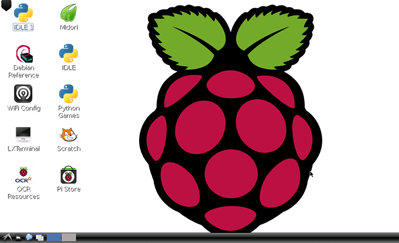

VNC Raspberry Pi
Interact Together

What is VNC with the Raspberry Pi?
The idea is to enable students to share their work with a class by linking their various mobile devices to a Raspberry Pi and having this display on the main projection screen for the class to view.
The Raspberry Pi is a small basic computer that runs a Linux based operating system. One of the main focuses for the Raspberry Pi is education.
The Raspberry Pi acts as a central hub which can be controlled by an iPad. It could also be controlled by another computer so long as it sits on the same network and the network allows this type of interaction. For this specific setup, the iPad will connect to the Raspberry Pi via an ad-hoc connection; meaning it will send the data directly to the device through wifi rather than via a physical connection.
When the iPad is connected to the Raspberry Pi, you will see what’s on the main screen via the iPad and be able to interact with it using the touch screen.
What you need
- Apple iPad
- VNC Client for iOS
Features
- Screen share the Pi via iPad.
- Control the Pi through a VNC connection.
- Use the Pi for a demo screen.
- Allow one connection at a time for group use.
How to connect
- Go to the iPad Apps Store and install VNC Client - Universal App.
- Enter the password for the WiFi to the Pi. In this case. letmeinnow.
- You are now connected to the Pi.
- Open the VNC client.
- Select New Server from the top left of the screen to view this page, and name the connection. This is the name used to list connections you have created.
- Enter the IP address of the Pi. 192.168.42.1.
- Enter the password of the Pi VNC connection. letmein1.
- This is what the list of connections looks like. You can delete a connection by swiping it and pressing the delete button when it appears.
- Select the newly made connection to the Pi.
- You are now connected to the Pi.
- Press the up arrow to minimise the top bar.